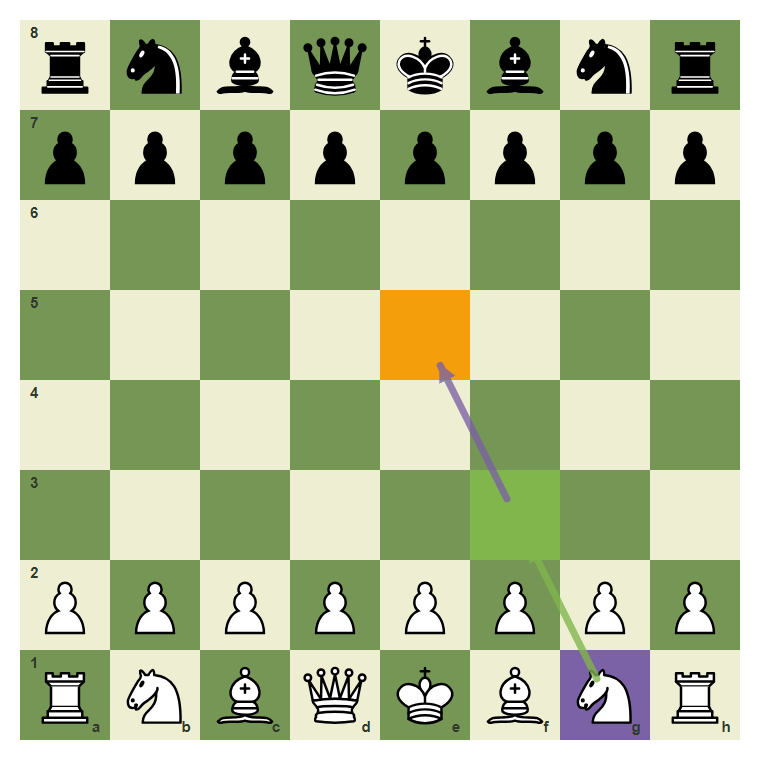
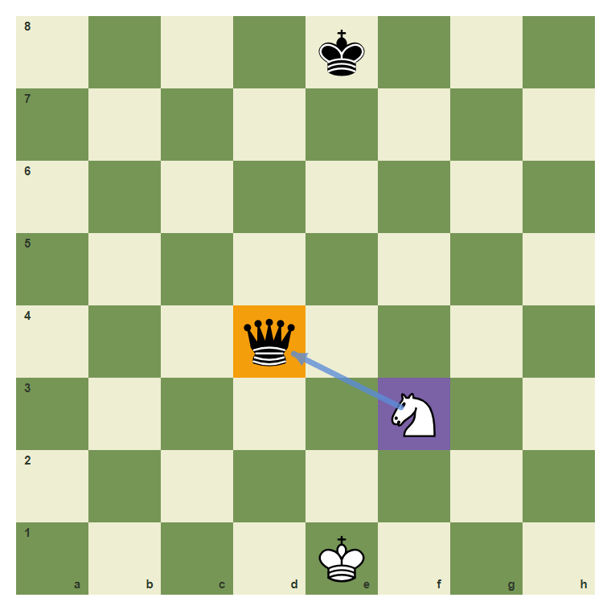
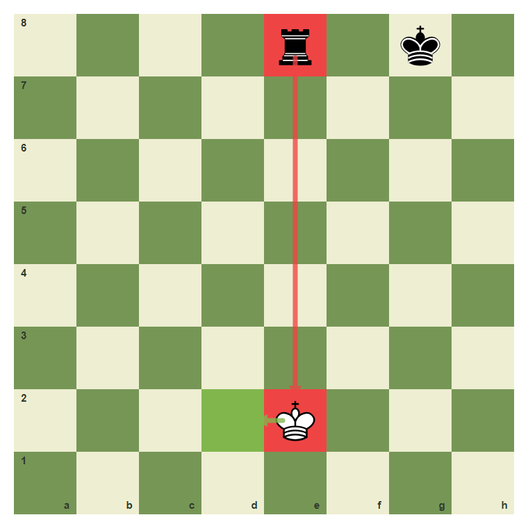
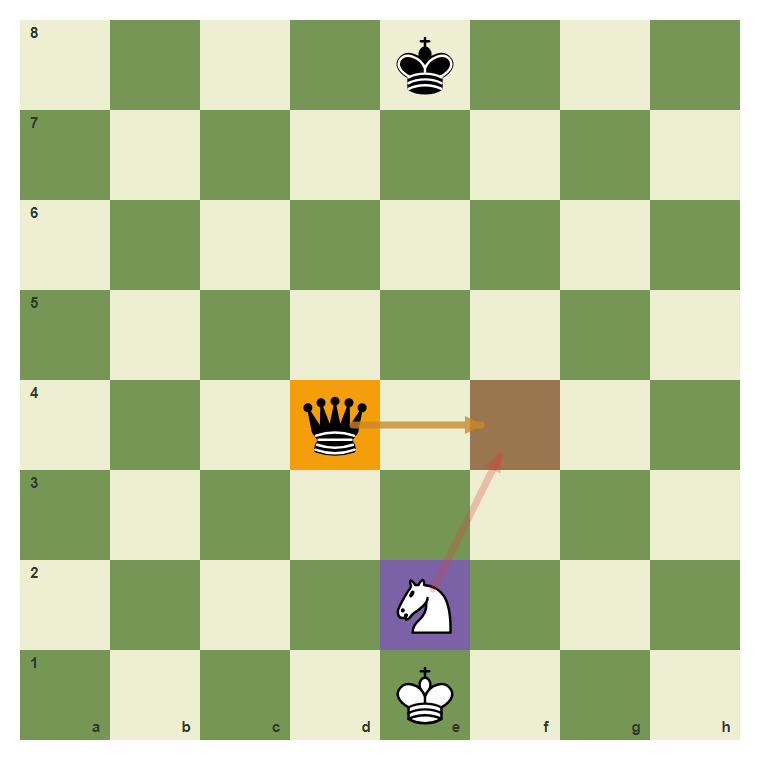
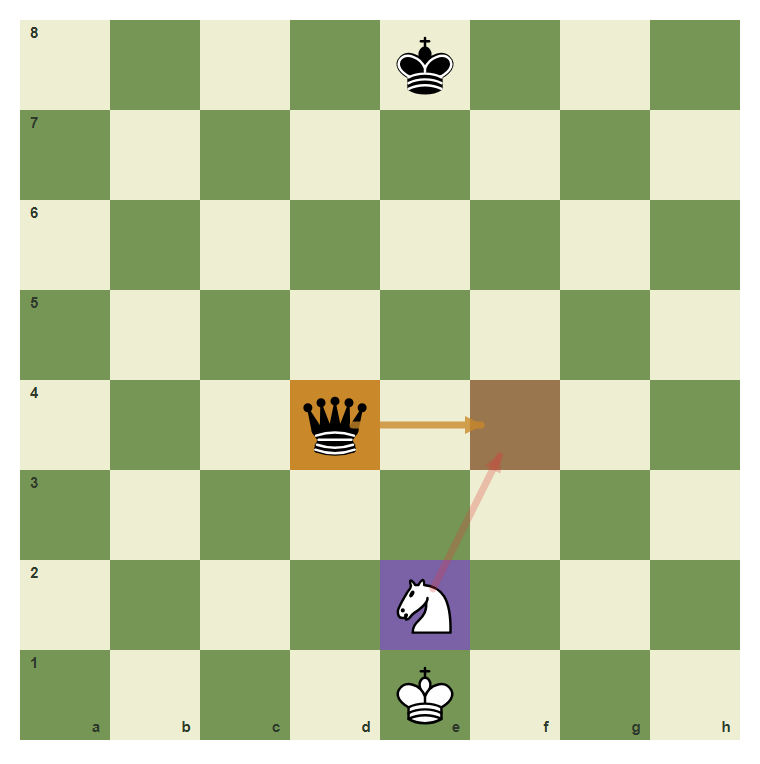

Blunder-Check Before Every Move
Pause once before the move leaves your hand.
- Ask what your move leaves behind.
- Check whether your moved piece becomes loose.
- Notice immediate checks and captures against you.
The One-Second Pause
A blunder-check is the final pause before moving. Ask: after my move, what can my opponent check, capture, or threaten?
Develop with a final check

Before g1-f3, notice that the knight lands on a protected, useful square.
Do not leave the queen loose

The queen on d4 is attacked. If it were your queen, you must notice it.
Check danger overrides plans

If your king is checked, the blunder-check has already found the emergency.
Your moved piece can become loose

A piece that moves into attack can become the new target.
A safe move passes the scan

The move b1-c3 develops and helps e4, so it passes the scan.
Make a move that passes the scan
Play g1 to f3 after checking that the piece lands safely.

Common mistake: move without the final pause
A fast move can walk into a simple capture. Slow chess is stronger chess.

The wrong square f4 is marked because it walks into the queen attack.
Chapter Checkpoint
A blunder-check asks what the opponent can:
A blunder-check asks what the opponent can:
The best time for a blunder-check is:
The best time for a blunder-check is:
Fast moves are always stronger than checked moves.
Fast moves are always stronger than checked moves.